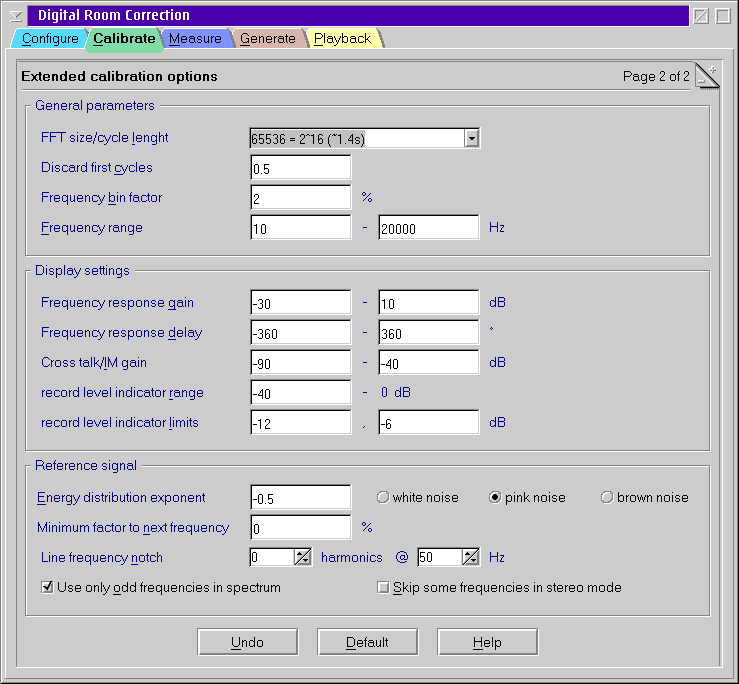

Extended calibration options

Normally there is no need to adjust the extended settings.
However, if you know what you are doing you might improve some things
here.
General Parameters
- FFT size/cycle length
- Number of samples used for frequency analysis by FFT. Therefore
it must be a power of two.
- This is also the number of samples after that the reference
signal repeats itself. This implies that all frequencies used for
measurement are multiples of the cycle time = cycle length
/ sampling rate.
The parameter mainly controls how long your measurement will take.
- Discard first cycles
- After pressing Start the first n samples of the test recording
are discarded. This is required to give the components a chance to
reach a
steady state. It is also useful to skip glitches at the start of the
recording. Recommended values are in the order of one or two cycle
times.
- Frequency bin factor
- Join neighbor frequencies in the result file if they fit into an
interval [f,f*(1+binfactor)]. The gain
and
the group delay will be averaged for all frequencies in the bin.
- Frequency range
- This is the range of frequencies that is used for the
measurement. Outside this interval the test signal contains no energy.
This also controls the X axis of the graphs.
Display settings
- Frequency response gain
- Range of the left Y axis of the frequency response graph.
- Frequency response delay
- Range of the right Y axis of the frequency response graph.
The units are degrees (of full cycles at the particular frequency) in
the calibration page and seconds in the measurement page.
- Cross talk/IM gain
- Range of the Y axis of the cross talk/intermodulation graph.
- Record level indicator range
- Set the level of the left boundary of the record level indicators.
- Record level indicator limits
- Levels where the color of the record level indicator turns from
green to yellow and red respectively.
Reference signal
- Energy distribution exponent
- This is the weight exponent used for the relative intensity of
different frequencies.
I ~ fexponent
Reasonable values are in the range [-1,0].
- Minimum factor to next frequency
- To limit the phase noise it could be helpful to set this factor
to a value slightly larger than 1. This causes the energy of
frequencies closer than the given factor to be collected in bins with
are at least this factor away.
- Line frequency notch
- Although good equipment will not be sensitive in practice often
the power line frequency and its harmonics appear as noise. Selecting a
nonzero value will eliminate the line frequency and the selected number
of harmonics from the measurement. Selecting 1 removes only the line
frequency itself, 2 removes also the double line frequency.
The drawback is that high group delays cannot longer be handled
correctly at the line frequency.
Reasonable values are 0 if you do not need this work around and 3 to
remove up to the 3rd harmonic. Of course, you
need to setup the line frequency of your country correctly for this to
work. Usually 50 or 60 Hz.
- Use only odd frequencies in spectrum
- If this option is checked all frequencies that fit an even number
of times in the cycle time are not used. This causes second order
intermodulations, i.e. sums and differences of other frequencies,
always to appear at even frequencies that do not contribute to the
result.
Disabling this option also disables the IM graphs in calibration.
- Skip some frequencies in stereo mode
- When entering stereo mode every second frequency is used for each
channel. This introduces a unwanted symmetry into the autocorrelation
function of the test signal. When this option is enabled some randomly
chosen frequencies in the spectrum are eliminated. This breaks the
symmetry and enables the measurement to deal with twice as large delays
- the same than in single channel mode.